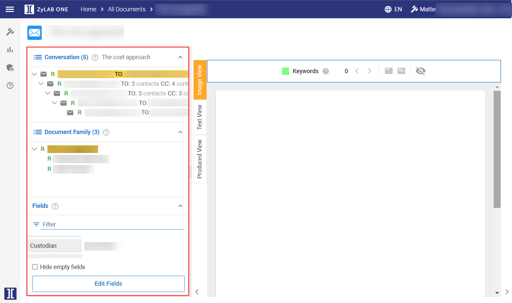
In Document View, the Conversation panel is located on the left-hand side of the screen. The email message displayed in Document View is marked in orange in the Conversation overview.
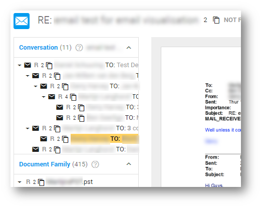
The Conversation panel consists of an email thread. An email or conversation thread is an email message and a list of all of the subsequent replies related to the original email.
When tagging, you have the option to tag only the currently opened email, the current branch or the entire conversation.
In Document View, the Document Family panel is located on the left-hand side of the screen. The email message displayed in Document View is marked in orange in the Document Family overview. If it is part of a large Document Family, then you might need to scroll down to find it.
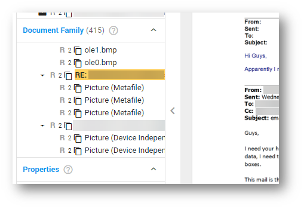
To open a document from the family, double click on it.
In Document View, the Fields panel is located on the left-hand side of the screen. Fields show the metadata of the document displayed in Document View. Fields are auto-filled with the metadata values associated with the document.
If there are duplicates with different properties, then you will be alerted by warning signs. Hover over a warning sign to view the different values.
If container files do not have UTC-information available in their metadata (for instance, due to how the file was modified/saved), then the UTC times assigned to these container files (zip, tar, rar, etc.) might not be their actual UTC times. In these instances, Local time will be stored and treated as the UTC time.
To hide the Fields that have not been (auto-)filled, select the Hide empty fields checkbox located at the bottom of the panel.
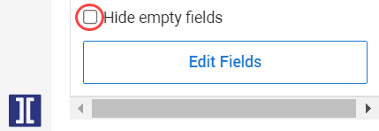
To filter the Fields, define what you would like to see and enter key words in the filter bar. For example, you can filter by 'email' fields. The Fields filter is saved and applied to other documents in Document View, until you change the filter.
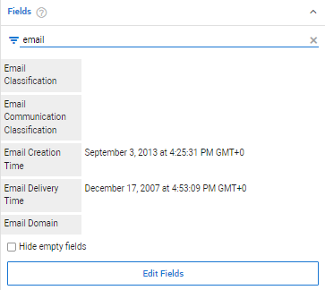
To edit the metadata values assigned to one or more Fields, open the Edit Fields wizard located at the bottom of the panel—see
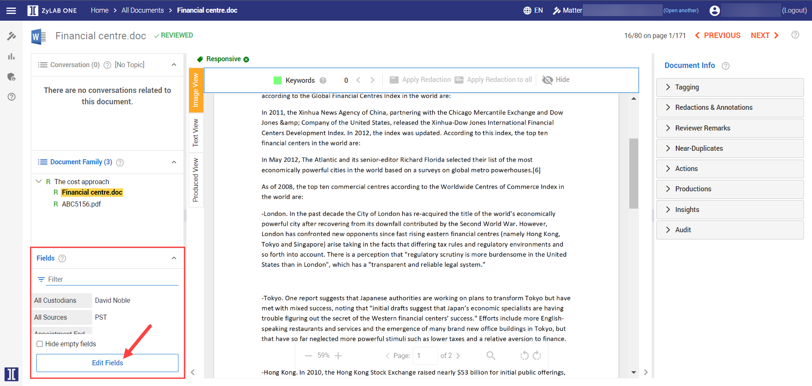
If you previously entered key words in the Filter search bar, then your filtered selection of Fields will be displayed in the Edit Fields wizard.
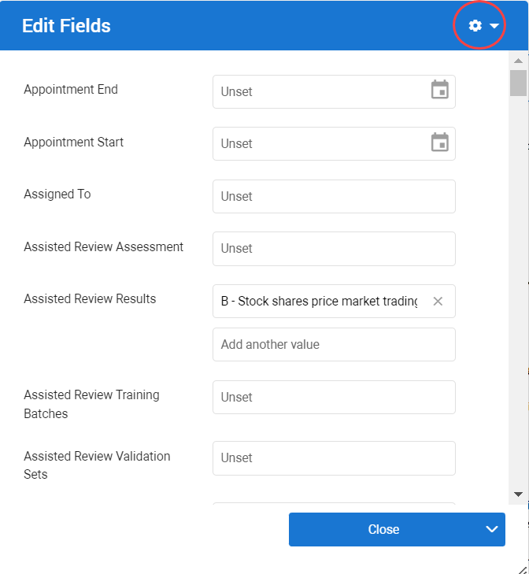
By default, all Fields are selected. To find and select the Fields that you would like to make changes to, first click on Select None to deselect all. Next, find the relevant Field(s): use the Search bar, or scroll through the list.
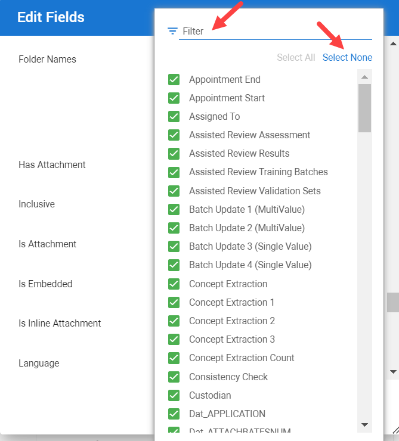
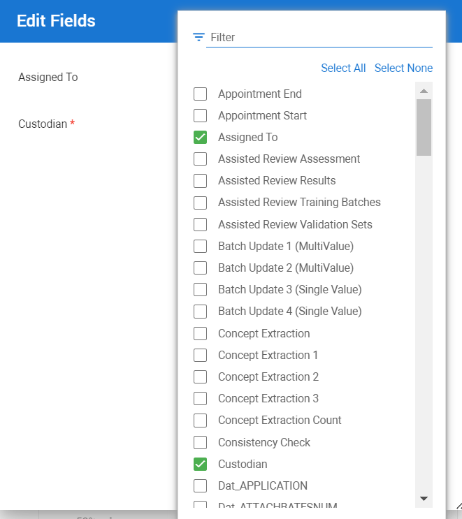
When you have selected the relevant Field(s), you can make the desired changes.
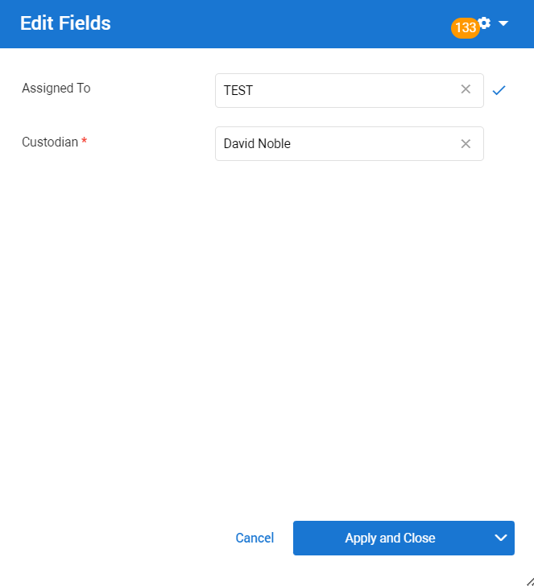
When finished, click Apply & Close. he changes made in Edit Fields, are saved and can be applied to other documents in Document View. If you wish to apply the edits to the current document and navigate to the previous or next document, select Apply and Previous Document or Apply and Next Document.
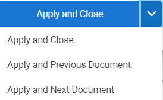